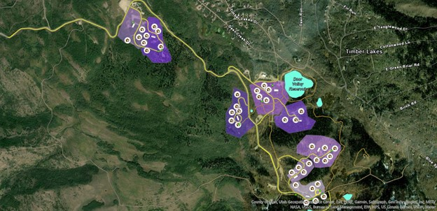
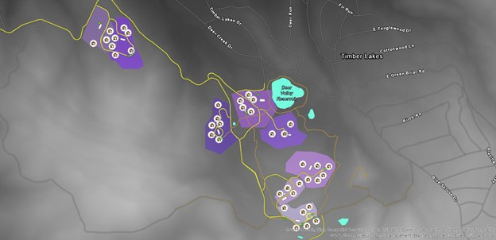
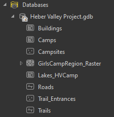

GIS Coursework / Week 02
Heber Valley Girls Camp


Overview
Built a geodatabase schema and digitized vector data for a girls’ camp in Heber Valley, Utah, to support a wildfire evacuation plan for the Church of Jesus Christ of Latter-day Saints.
Process
Defined feature classes for roads, trails, buildings, campsites, and trail entrances, each with the attribute fields needed to plan an evacuation route, then organized them into a geodatabase.
